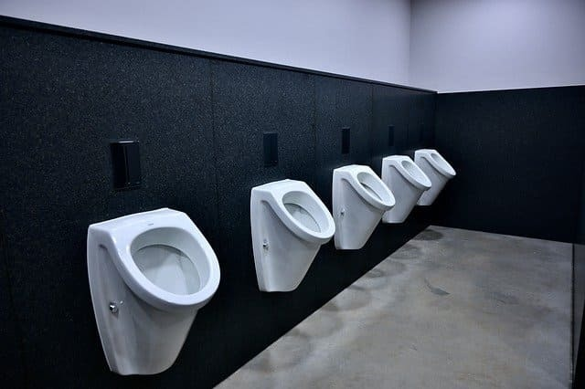

慢性腎炎の鍼灸
腎臓専門医の管理と食事・薬物療法が最優先です。安定期・主治医許可下のむくみや倦怠感、自律神経を優しく整えます。
まず知っておきたい要点と改善の流れ
腎臓のろ過フィルターである糸球体に慢性的な炎症が起き、蛋白尿や血尿が1年以上持続する病気です。初期は無症状のことが多く、IgA腎症のように肉眼的血尿で気づく場合もあります。原因は不明な例が多いものの、急性腎炎の慢性化、自己免疫疾患、糖尿病、高血圧、感染症、消炎鎮痛薬などが関与します。尿蛋白が多い状態を放置すると慢性腎不全へ進行する恐れがあるため、腎臓専門医による継続管理が不可欠です。（公式解説）
このようなお悩みはありませんか？
- ✓健康診断で蛋白尿や血尿を指摘された
- ✓尿の泡立ちや濁り、強い臭いが気になる
- ✓足や顔のむくみがなかなか取れない
- ✓慢性的なだるさや疲れやすさを感じている
当院の施術アプローチ・改善の流れ
なぜ鍼灸で改善へ向かうのか？（作用機序の図解）
慢性腎炎に対する鍼灸は、仙髄排尿反射（陰部神経）と骨盤底の協調調整機序を通じて、お体本来の回復力を引き出します。

膀胱・尿道括約筋を支配する仙髄神経（S2〜S4）領域の経穴へ的確にアプローチします。
弱まった骨盤底筋の収縮サポートと、過敏になった膀胱排尿筋の鎮静をバランスよく促します。
腰殿部と下腹部の血流を高め、冷えや過緊張による頻尿・違和感・痛みを和らげます。
泌尿器科の評価やセルフエクササイズと併用し、安心して外出できる日常の回復を支えます。
院長YouTube解説・関連動画
慢性腎炎の改善は薬と食事
原因が不明であるため、根本的な改善法は確立されていませんが、食事や薬での改善を行います。
近年日本では、扁桃腺の摘出とステロイドの併用がよい成績をあげています。
薬では他にも抗血小板薬や抗凝固薬、高血圧を下げる作用のある降圧薬や
※副腎皮質ステロイド薬を使用します。
※副腎皮質ステロイド薬：ステロイドとは、腎臓の上にある副腎から作られる副腎皮質ホルモンの１つです。 ステロイドホルモンを薬として使用すると、体の中の炎症を抑えたり、体の免疫力を抑制したりする作用がある
また、尿タンパク1g以上を放置すると10年でおよそ30％が慢性腎不全に移行します。慢性腎不全は腎臓の機能が数カ月から数年をかけて徐々に低下していく病気です。定期的に尿を調べることが非常に大切です。
＜食事＞
薬と併用して食事も改善します。
- •十分なエネルギー補給（カロリー34～40kcal/標準体重kgあたり）
- •タンパク制限食（0.6～1.2ｇ/標準体重kgあたり）
- •食塩制限（食塩6ｇ）
糸球体腎炎では高血圧になりやすく、腎不全の進行速度と高血圧との関係が深いため、血圧の低下および正常化を目的とした食塩制限は重要になります。
慢性腎炎の改善と改善には、病状の進行を遅らせ、残存する腎機能を保持することが重要です。以下に、慢性腎炎の改善に役立つ一般的な方法を挙げます。
血圧管理:高血圧は腎機能低下の進行を加速させるため、血圧を適切な範囲に保つことが重要です。ACE阻害剤やARBなどの血圧降下薬が処方されることがあります。
糖尿病のコントロール:糖尿病の場合は、血糖値を適切に管理することで腎症の進行を遅らせることができます。
食事:塩分の摂取制限、たんぱく質の制限、カリウムやリンの摂取量の調整など、腎臓に負担をかけない食事を心がけます。
適切な水分摂取:脱水状態を避けるために適切な水分摂取が必要ですが、水分の過剰摂取もまた避けるべきです。
禁煙:喫煙は腎臓の健康に悪影響を及ぼし、病状の悪化を早める可能性があります。
運動:定期的な運動は血圧を下げ、全体的な健康状態を改善するのに役立ちます。
体重管理:適切な体重を維持することで、糖尿病や高血圧などのリスクを減らすことができます。
薬剤の使用に注意:非ステロイド性抗炎症薬（NSAIDs）など、腎臓に負担をかける薬剤の使用を避けるべきです。
定期的なフォローアップ:腎機能のモニタリングと必要に応じた改善の調整が重要です。
これらの改善方法は、個々の健康状態や病状に応じて調整されるべきです。
慢性腎炎の改善に使用される薬は、病状の進行を遅らせ、残存する腎機能をできる限り保つことを目的としています。以下に、慢性腎炎の改善に一般的に使用される薬を挙げます。
血圧降下薬:高血圧は腎臓の病気の進行を加速させるため、血圧を管理するための薬が重要です。
ACE阻害剤（例：エナラプリル、リシノプリル）やARB（例：ロサルタン、バルサルタン）は、腎機能を保護する効果があるとされています。
利尿剤:余分な水分やナトリウムを体外に排出し、浮腫や高血圧をコントロールします。チアジド系利尿剤やループ利尿剤（例：フロセミド）が使用されます。
リン結合薬:腎機能低下に伴い血中リンが増加することを防ぎます（例：セベラマー、カルシウムアセテート）。
エリスロポエチン:腎臓が十分なエリスロポエチン（赤血球生成を刺激するホルモン）を生成できない場合、合成エリスロポエチンの投与が行われます。
鉄補充:貧血の治療に鉄製剤が用いられることがあります。
ビタミンD補充:腎機能低下によりビタミンDの活性化が減少するため、ビタミンDの補充が必要になることがあります。
脂質降下薬:高脂血症をコントロールするためにスタチンなどの脂質降下薬が使用されることがあります。
慢性腎炎の改善においては、これらの薬に加えて、食事や適切な水分摂取、禁煙、運動などのライフスタイルの変更も重要です。
慢性腎炎は、放置しておくと人工透析や腎移植が必要な慢性腎不全になってしまうこともある病気です。
重症化しないため、そして早期に異変に気付けるようにまずはご自身で毎日以下の内容をチェックすることをお勧めします。
異変があった際はすぐに医療機関に行ってください。
色に濁りと泡立ちが強く、匂いがきつい尿が続いていたら要注意です。
尿の色は摂取した水分量の影響で変わったりします。朝早くの尿は色が濃く、寒いときや水分を大量摂取した後の尿は無色に近いなど、感じたことがあると思います。
食事や時間などに注意し毎日チェックしていきましょう。
健康なときの尿はほとんどニオイがありません。普段との違いが続く場合、病院にいくことをおすすめします。
足や顔のむくみが続く、、、もしかしたら腎臓のせいかもしれません。
腎臓は水分を尿として排出する機能を持ちます。そこが正常に機能しなくなると、体内に水分が溜まってしまうので、身体のさまざまな箇所がむくみます。
異常なむくみを感じたら腎臓の異常を疑い、医療機関にいきましょう。
また、心不全や栄養失調なども腎臓以外でむくみの原因になります。

腎・泌尿器・排尿トラブル・透析サポートのツボ図解
実際の施術ではお一人おひとりの体質・症状に合わせて選穴しますが、過活動膀胱・尿失禁・前立腺症状・CKD/透析QOLの標準治療併用ケアの臨床でよく用いられる代表的なツボの目安です。

📌 代表的なツボの詳細一覧表を開く（6穴） ▼
| ツボ名 | 位置の目安 | 主な狙い | セルフケアの注意点 |
|---|---|---|---|
| 腎兪（じんゆ） | 腰のくびれの高さ、背骨から指2本分外側 | 腎・泌尿器周囲の自律神経と冷え・倦怠感ケア | 腰部を温めることで夜間頻尿の負担も和らぎます。 |
| 次髎（じりょう） | 仙骨の2番目のくぼみ（お尻の上中央付近） | 仙髄排尿神経（S2〜S4）を介した膀胱機能調整の最重要穴 | 腹圧性・切迫性尿失禁や過活動膀胱の国際RCTでも定番です。 |
| 関元（かんげん） | おへそから指4本分下 | 下腹部の冷え改善・骨盤内の循環サポート | 排尿を済ませた状態で優しく温めます。 |
| 中極（ちゅうきょく） | 恥骨のすぐ上、おへそから指5本分下 | 膀胱の過敏性・残尿感・頻尿の調整 | 強く押し込まず軽く手を当てる・温める程度にします。 |
| 三陰交（さんいんこう） | 内くるぶしの上から指4本分上 | 脛骨神経を介した膀胱過活動の鎮静・睡眠の質改善 | 透析中の方はシャント腕を避け非透析日に安全に行います。 |
| 太渓（たいけい） | 内くるぶしとアキレス腱の間 | 腎経の原穴として冷え・むくみ・夜間頻尿の土台づくり | 足首を冷やさない工夫と合わせてケアします。 |
国際査読論文の科学的エビデンス
国際的な医学データベース（PubMed・Cochrane等）で報告されている過活動膀胱・尿失禁・前立腺症状・CKD/透析QOLの標準治療併用ケア領域の代表的な査読済み鍼灸研究をまとめています（標準治療との併用や研究上の限界を含めて正確に掲載）。
📚 査読論文データ・PubMed出典リンクを開く（4件） ▼
| 年・研究デザイン | 対象・規模 | 主な結果 | 限界・出典 |
|---|---|---|---|
| 2017年 大規模多施設RCT | 腹圧性尿失禁女性 504名（12病院・腰仙部電鍼） | 6週時の1時間パッド尿漏れ量は電鍼-9.9g vs シャム-2.6g（差7.4g, P<0.001）、30週まで失禁減少持続。 | 30週以降の長期持続は今後の検証課題。 JAMA (PMID: 28655016) |
| 2021年 大規模多施設RCT | 慢性前立腺炎/CPPS男性 440名（10病院） | 8週時のレスポンダー率60.6% vs シャム36.8%（OR 2.6, P<0.001）、32週時点でも61.5% vs 38.3%持続。 | 細菌性前立腺炎・悪性疾患の除外が前提。 Ann Intern Med (PMID: 34399062) |
| 2022年 Cochraneレビュー | 過活動膀胱 15研究（n=1,395） | 薬物比較で症状改善率RR 1.25・軽度有害事象減少（RR 0.34）・夜間頻尿減少。重篤な有害事象なし。 | シャム比較では不確実、GRADE低〜非常に低。 Cochrane (PMID: 36148895) |
| 2023年 メタ解析 | 過活動膀胱 30研究統合 | シャム比較でOABSS有意改善（MD -1.13, P=0.01）、薬物併用でOABSS MD -2.28（P<0.00001）。 | 異質性が高く（I²=67〜94%）、GRADE低〜非常に低。 Front Neurol (PMID: 36712423) |
参考文献・出典
- 銀座そうぜん鍼灸院「慢性腎炎の公式解説ページ」
- 2017年 大規模多施設RCT（腹圧性尿失禁女性 504名（12病院・腰仙部電鍼））— JAMA (PMID: 28655016)
- 2021年 大規模多施設RCT（慢性前立腺炎/CPPS男性 440名（10病院））— Ann Intern Med (PMID: 34399062)
- 2022年 Cochraneレビュー（過活動膀胱 15研究（n=1,395））— Cochrane (PMID: 36148895)
- 2023年 メタ解析（過活動膀胱 30研究統合）— Front Neurol (PMID: 36712423)
よくある質問（FAQ）
Q. 慢性腎炎の治療中に鍼灸を受けても大丈夫ですか？▼
Q. 日常生活で気をつけるべきサインはありますか？▼
あわせて読まれる関連疾患（泌尿器のお悩み）
腎臓の糸球体に異常なIgAが沈着して炎症が続く指定難病です。腎臓専門医の管理を最優先に、安定期の体調維持を優しく支えます。
指定難病のため腎臓専門医の薬物・食事管理が最優先です。安定期・主治医許可下の疲労感やむくみ、自律神経を補完ケアします。
IgA血管炎に伴い腎臓に炎症が起きる疾患です。腎臓専門医での治療と管理を最優先に、安定期の体調回復を穏やかに支えます。
腎臓専門医の薬物・基礎疾患治療と食事制限が最優先です。安定期・主治医許可下の疲労感やむくみ、自律神経を穏やかに支えます。
急速進行性の指定難病のため腎臓専門医の緊急・標準治療が最優先です。寛解・安定期かつ主治医許可下の倦怠感ケアに限定します。
十分な勃起が得られない・保てない状態（ED）です。泌尿器科での基礎疾患精査や正規治療薬を基本に、自律神経と血流面を鍼灸で補完します。
おひとりで悩まず、まずはご相談ください
銀座本院・川口・大宮・横浜・博多・田無の各院でご予約を承っております。